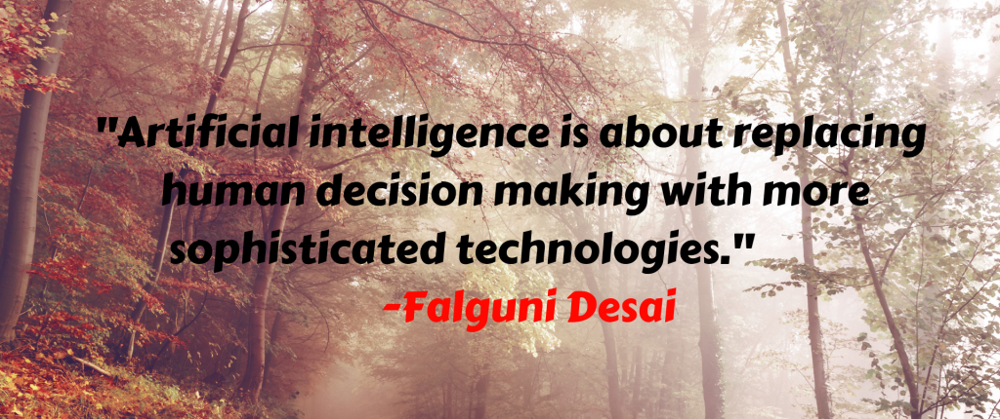

Artificial Intelligence in Healthcare
This is the most important thing that humans need in today’s generation. Health is wealth, and the rate at which humans are compromising on it is shocking.
With AI, natural language is a boon. It helps to respond to the questions that are asked for. It enables workflow assistants who help the doctors to free up their schedules and also reduce the time and cost by streamlining processes. They also open new avenues for the industry. With that, AI-powered technology helps pathologists in analyzing samples of tissue and helps the diagnosis to be more accurate.
1. It helps to support decision making and research.
2. Help to integrate activities in medical, software, and cognitive sciences.
3. Help to offer a content-rich discipline for the future scientific medical communities.

Artificial Intelligence in Business
A business heavily relies on real-time reporting, accuracy, and processing of large volumes of quantitative data to make crucial decisions. With this efficiency and effectiveness of a business, it is quickly able to implement machine learning. The adaptive intelligence, chatbots and automation helps to smoothen out the business process.
Let’s take an example of the Help Desk. AI there is used in online help centers. If you’ve visited a website, you must have seen that the chat window pops up. You can then ask questions there directly and they revert to your problem or query in no time.
This happens with the help of robotic process automation. This thus reduces the repetitive tasks that are normally performed by humans. The algorithms are integrated into analytics and CRM (Customer relationship management) platforms, which uncover information on how to better serve the customers.
Artificial Intelligence in Education
Checking made easy:
It must be very tedious for a teacher to grade homework and tests for large lecture courses. A significant amount of time is consumed to interact with students, to prepare for class, or work on professional development. But, this will not be the case anymore.
Though it can never replace human work, it is pretty close to it. So, with the automated grading system checking multiple-choice questions, fill-in-the-blank testing and automated grading of students can be done in a jiffy.
It can tell the areas, where there is a need for improvement –
A lot of times, it happens that the teachers may not be aware of the gaps that a student might face in the lectures and educational materials. This can leave students confused about certain concepts. With AI, the system alerts the teacher and tells what is wrong. It gives students a customized message which offers hints to the correct answer.
This thus helps to fill in the gaps in explanation that might occur in courses. It also ensures that students are building the same conceptual foundation..
Artificial Intelligence in Autonomous Vehicles
Long-range radar, cameras, and LIDAR, a lot of advancement has been made in the autonomous vehicle segment. These technologies are used in different capacities and each of them collects different pieces of information. The information is of no use unless it is processed and any form of insights can’t be derived.
This is where artificial intelligence is used and where it can be compared to the human brain. Some of their usages in autonomous vehicles are:
• Directing the car to the gas station or recharge station when it is running low on fuel.
• Adjust the trip’s directions based on known traffic conditions to find the quickest route.
• Incorporate speech recognition for advanced communication with passengers.
• Natural language interfaces and virtual assistance technologies.
5-Artificial Intelligence in Social Media
Instagram, Snapchat, Facebook, Twitter, the world today is changing and everyone is using these social media apps to stay connected with the virtual world. But, are you aware of the fact that a majority of your decisions are being influenced by artificial intelligence.
Starting from notifications, to upgradations, everything is curated by AI. It considers all the past web searches, behaviors, interactions, and much more. So, while you visit these websites, your data is being stored and analyzed and thus you are served with a personalized experience.
Artificial Intelligence for a Better World
Many people say that technology is snatching away their jobs and with the machine, there is no need for humans. But, do you know that it is these machines that are making the world a better place to live in.
It is this AI, which is helping us to prevent future damage. It understands the needs and addresses developmental needs while focusing on sustainability.
Do you know that companies like Microsoft are using AI to study land-use patterns with terrain maps? By understanding these patterns in-depth, better decisions related to land are taken. This is helping in implementing proper preservation techniques. Scientists are using the information obtained to preserve biodiversity and the ecosystem.
Artificial Intelligence in Tourism
Travel around with AI. Right time! Right Price!
Competition in the travel and tourism industry is very high. You must have seen that prices keep on fluctuating and change often.
You might have also booked a flight ticket in advance or have waited just before the departure date to find cheaper tickets. Everyone does that, but the struggle is minimized with AI.
With predictive analytics driven by artificial intelligence, the price can be predicted. The application can predict price patterns and alert travelers when to buy the tickets. So, the cheapest rate can be known before you book the flights to your destination.
The price trend is analyzed based on the recorded data on each route. So, you get notifications of when to book your flight. Book it at the right time and the right price and say thanks to artificial intelligence.